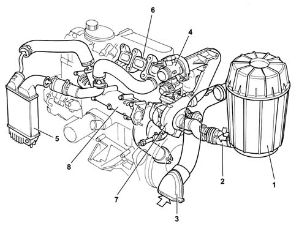
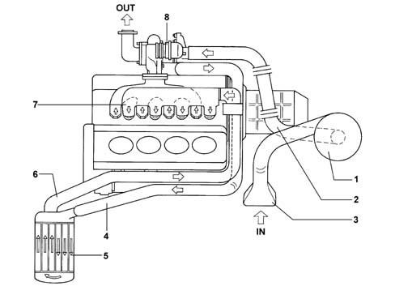
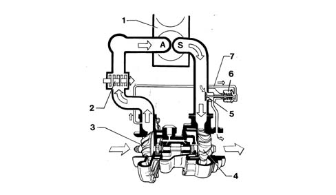
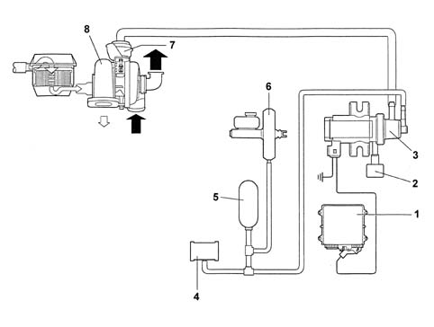
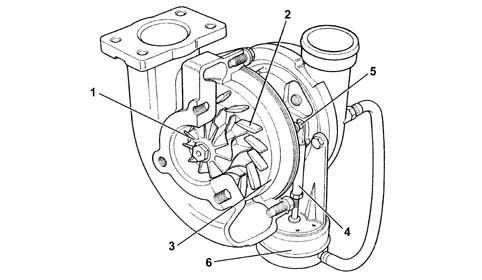
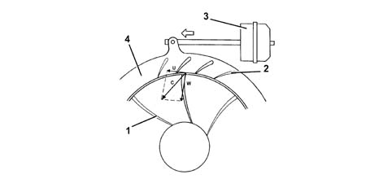
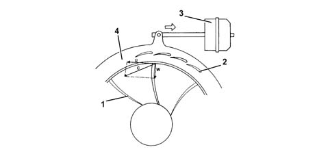
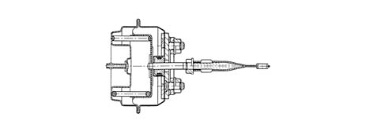

TURBOOCHARGING WITH EXHAUST GAS TURBOCHARGER
- Path
- Descriptions > 10 ENGINE > TURBOOCHARGING WITH EXHAUST GAS TURBOCHARGER
- Kind
- system description
- Applies to
- engines: 2.3 JTD 16V, 2.8 JTD 8V; all production periods
- Interactive page
- https://sloeber94.github.io/elrnDB-fDct/en/#/244000364
Applies to: engines: 2.3 JTD 16V; all production periods
INTRODUCTION

Turbocharger and regulation valve (wastegate)
Applies to: engines: 2.8 JTD 8V; all production periods
INTRODUCTION

Turbocharger and regulation valve (wastegate)

TURBOCHARGER (GT2256V)
Specifications

Composition

Operation at high rotation speeds

Operation at low rotation speeds

Turbocharger actuator proportional solenoid valve
Turbocharger actuator
